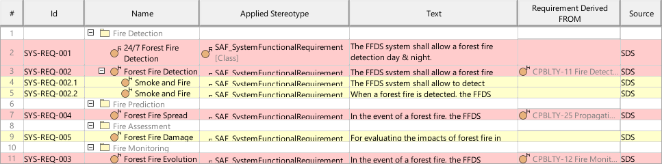

F6_SRQD System Requirement Definition Viewpoint
| Domain | Aspect | Maturity |
|---|---|---|
| Functional | Requirement |

The System Requirement Definition Viewpoint specifies functions, non-functional properties, or constraints of the System. System Requirements are captured, the interrelationships between Functional and Non-Functional Requirements on the same level of abstraction and the traceability to Stakeholder Requirements are depicted.
The System Requirement Definition Viewpoint supports the “System Requirements Definition Process” activities of the INCOSE SYSTEMS ENGINEERING HANDBOOK 2015 [§4.3] and contributes to the System Requirements Verification and Traceability Matrix (RVTM).
A tabular format listing
The following Stereotypes / Model Elements are used in the Viewpoint: